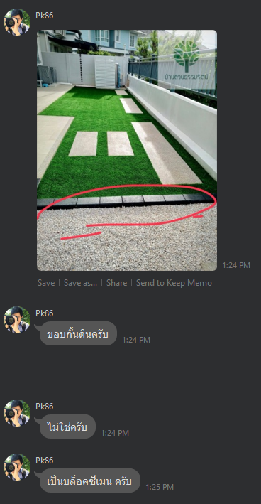

สรุปงานจัดสวน — พื้นที่จากแผน plan-2
และราคากลางตลาด (อ้างอิงเปรียบเทียบ)
พกพาได้ — คัดลอกโฟลเดอร์ quotation (summary.html + plan-2.jpg) ไปด้วยกัน
สารบัญ
- 1. แผน plan-2 และความหมายสี
- 2. มิติแปลงและสูตรคำนวณพื้นที่
- 3. สมมติฐานราคากลาง (รวมค่าแรง)
- 4. ใบเสนอ v1 / v2 vs พื้นที่แผน
- 4b. สรุป v2 vs ราคากลาง (12/07/2569)
- 4c. ปูพื้น SCG — รูปงานติดตั้งจริง + ประเมิน 1,500/ตร.ม.
- 4d. ขอบกั้นดิน บล็อกซีเมน (รูปงานจริง)
- 5. ตารางราคากลาง × พื้นที่แผน
- 6. เปรียบเทียบหน่วยราคา
- 7. ทางเลือก: หลังบ้านเป็นหินเกล็ด
- 8. คำถามที่ควรถามผู้รับเหมา
- 9. ข้อจำกัดและคำแนะนำ
- 10. แหล่งอ้างอิงราคากลาง
1. แผน plan-2 และความหมายสี

| สี | งาน | หมายเหตุ |
|---|---|---|
| เขียว | ปลูกหญ้านวลน้อย | สนามบน + สนามล่างซ้าย |
| แดง | หินเกล็ดดำ + แผ่นกันวัชพืช | กรอบรอบบ้าน − footprint ตัวบ้าน |
| เหลือง | ปูพื้นภายนอก | แถบเต็มความกว้าง 1 ช่องกริด |
| เทา | เทคอนกรีตหน้าบ้าน | โรงจอดขวา + ทางเข้า |
| น้ำเงิน | โรงจอดรถ (carport) | ไม่มีใน PDF — บันทึกพื้นที่แยก |
2. มิติแปลงและสูตรคำนวณพื้นที่
| รายการ | มิติ | ตร.ม. |
|---|---|---|
| แปลงรวม (ประมาณ) | 12.88 × 42.35 | 545.5 |
| หญ้า — สนามบน | 12.88 × 12.35 | 159.1 |
| หญ้า — สนามล่างซ้าย | 6.08 × 3.00 | 18.2 |
| รวมหญ้า | 159.1 + 18.2 | 177.3 |
| กรอบแดงรวม | 12.88 × 15.00 | 193.2 |
| ตัวบ้านในกรอบ (หัก) | 10.90×6 + 1.90×3 + 6.40×6 | −109.5 |
| หินเกล็ดดำสุทธิ | 193.2 − 109.5 | 83.7 |
| ปูพื้นภายนอก | 12.88 × 3.00 | 38.6 |
| คอนกรีต — โรงรถขวา | 6.80 × 9.00 | 61.2 |
| คอนกรีต — ทางเข้า | 6.80 × 6.00 | 40.8 |
| รวมคอนกรีต | 102.0 | |
| carport | 6.08 × 6.00 | 36.5 |
หญ้า = 12.88×12.35 + 6.08×3.00 = 177.3 ตร.ม.
รวม 4 รายการหลัก = 401.6 ตร.ม. (±5–10% จากการ trace แผน)
3. สมมติฐานราคากลาง (รวมค่าแรง + วัสดุมาตรฐาน)
| รายการ | ราคากลาง/หน่วย | ภาคใต้แนะนำ | รวมอะไรบ้าง | ช่วงตลาด + แหล่งหลัก |
|---|---|---|---|---|
| หญ้านวลน้อย | 120 บาท/ตร.ม. | 110 บาท/ตร.ม. | หญ้าจริง + ปูและปรับพื้นเบื้องต้น | 80–150 ทั่วไป — spol.co.th · ภาคใต้ 80–120 — spol สงขลา, zoysiagrassfarm (สุราษฎร์) |
| หินเกล็ดดำ | 300 บาท/ตร.ม. | 300 บาท/ตร.ม. | ปรับพื้น + โรยหิน (เหมางาน) | ทั่วไป 250–350 — Pantip · ภาคใต้วัสดุ หาดใหญ่, กรวดโรยสวน 350–500 Gardenstone สงขลา (คนละสเปก) |
| ปูพื้นภายนอก | 750 บาท/ตร.ม. | 700 บาท/ตร.ม. | ค่าแรง + วัสดุพื้นฐาน | ทั่วไป 300–550 — loglanefloor · ภาคใต้ค่าแรง 150/ตร.ม. หาดใหญ่-สงขลา + วัสดุแยก |
| เทคอนกรีต | 450 บาท/ตร.ม. | 500 บาท/ตร.ม. | คอนกรีต ~10 ซม. รวมแรง+วัสดุ | ทั่วไป 300–450 — theeraphong.com · ภาคใต้เหมา 10 ซม. ~600 สงขลา (งานเล็กอาจสูงกว่า) |
| แผ่นทางเดินทรายล้าง 40×80 | 180 บาท/แผ่น | 180 บาท/แผ่น | แผ่นมาตรฐาน — ยังไม่รวมติดตั้งพิเศษชัด | 120–235 ทั่วประเทศ — nanagarden 140 · ภาคใต้ไม่พบร้านเฉพาะ — ใช้ราคาผลิตภัณฑ์ + ขนส่ง |
| carport (อ้างอิง) | 450 บาท/ตร.ม. | 500 บาท/ตร.ม. | ใช้อัตราเทคอนกรีต — ไม่มีใน PDF | เทียบอัตราเทคอนกรีตภาคใต้ — ดูแถวเทคอนกรีต |
ยังไม่รวม: ขนดินไกล, ระบบน้ำ, วัสดุพรีเมียม, รถปั๊มยาก, แผ่นกันวัชพืชชั้นพิเศษ (แผนระบุแต่ benchmark ไม่ได้แยกรายการ)
4. ใบเสนอ PDF เดิม vs พื้นที่จากแผน
| รายการ | PDF จำนวน | PDF /หน่วย | PDF รวม | แผน จำนวน | หมายเหตุ |
|---|---|---|---|---|---|
| หญ้า | 10 → 100 | 1,575 → 157.5 | 15,750 | 177.3 | PDF ใส่ 10 ผิด — 100 ตร.ม. @ 157.5/ตร.ม. |
| หินเกล็ดดำ | 210 | 300 | 63,000 | 83.7 | PDF มากกว่าแผน ~2.5 เท่า |
| ปูพื้นภายนอก | 34 | 1,500 | 51,000 | 38.6 | ใกล้เคียง |
| คอนกรีต | 54 | 750 | 40,500 | 102.0 | แผนใหญ่กว่า PDF ~1.9 เท่า |
| แผ่นทางเดินทรายล้าง | 34 แผ่น | 250 | 8,500 | — | ไม่มีโซนสีใน plan-2 |
| รวม PDF | 178,750 | มัดจำ 50% = 89,375 บาท (ไม่คืนทุกกรณี) | |||
ราคากลาง × จำนวนบริษัท (แก้หญ้า 100 ตร.ม.)
| รายการ | บริษัท จำนวน | กลาง/หน่วย | กลางรวม | บริษัท รวม | ส่วนต่าง |
|---|---|---|---|---|---|
| หญ้า | 100 | 120 | 12,000 | 15,750 | +3,750 |
| หินเกล็ดดำ | 210 | 300 | 63,000 | 63,000 | 0 |
| ปูพื้น | 34 | 750 | 25,500 | 51,000 | +25,500 |
| คอนกรีต | 54 | 450 | 24,300 | 40,500 | +16,200 |
| แผ่นทางเดิน | 34 | 180 | 6,120 | 8,500 | +2,380 |
| รวม | 130,920 | 178,750 | +47,830 (+37%) | ||
4b. สรุปใบเสนอ v2 (12/07/2569) vs ราคากลาง
| รายการ | v2 จำนวน | v2/หน่วย | v2 รวม | กลาง/หน่วย | กลาง×v2 | ประเมิน |
|---|---|---|---|---|---|---|
| หญ้านวลน้อย | 197 | 150 | 29,550 | 120 | 23,640 | สูงกว่ากลาง ~25% — ใกล้แผน 177.3 มากขึ้น |
| หินเกล็ดดำ | 111 | 300 | 33,300 | 300 | 33,300 | ตรงกลาง — แต่ยัง > แผน 83.7 |
| ปูพื้นภายนอก | 34 | 1,500 | 51,000 | 750* | 25,500 | *ถ้า SCG UVT ติดตั้งครบ — สมเหตุสมผล (ดู §4c) |
| คอนกรีต 15 cm + mesh | 129 | 750 | 96,750 | 450* | 58,050 | *กลาง ~10 cm — ปรับ 15 cm ~675 ยังสูง |
| แผ่นทางเดินทรายล้าง | 34 | 250 | 8,500 | 180 | 6,120 | สูงกว่ากลาง ~39% |
| ขอบกั้นดิน บล็อกซีเมน (ลืม v1) | 13.5 | 250 | 3,375 | ~150–250/ม. | — | รูปงานจริง — กั้นหญ้า/หิน · PDF อาจเขียนผิดหน่วย (น่าจะเป็น เมตร) |
| ค่าบริการ = แม็คโครปรับพื้นที่ (ลืม v1) | 1 | 6,000 | 6,000 | — | — | ชี้แจงบริษัท 13/07 — ไม่ใช่ค่าเดินทาง |
| รวม | 228,475 | 146,610 (5 รายการ) | v2 สูงกว่ากลาง +56% รวมทั้งหมด | |||
ข้อดี v2: หญ้า 197 ตร.ม. ชัด · หน่วยหญ้า 150 · สเปกคอนกรีตระบุ · หินตรงกลาง · ปูพื้น SCG สมเหตุสมผล (§4c)
ชี้แจงบริษัท 13/07: คอนกรีต 129 = ทางลาด+ถนนเชื่อม (โซนเทา) · ขอบกั้นดิน = บล็อกซีเมน 3,375 (ไม่ใช่ซัมโน้นดำ) · ค่าบริการ 6,000 = แม็คโครปรับพื้นที่
ยังควรคุย: คอนกรีต 129 vs แผน 102 · พื้นที่หิน 111 vs แผน 84 · มัดจำ 100,000
4c. ปูพื้นภายนอก SCG — รูปงานติดตั้งจริง

| เปรียบเทียบ | บาท/ตร.ม. | หมายเหตุ |
|---|---|---|
| ใบเสนอ v2 | 1,500 | 34 ตร.ม. = 51,000 บาท |
| ราคากลางทั่วไป (งานปูพื้นพื้นฐาน) | 750 | benchmark เดิม — ไม่ใช่สเปก SCG UVT |
| SCG UVT วัสดุอย่างเดียว | 640–850 | บ้านและสวน |
| SCG Home ติดตั้งครบ (ดิน / คอนกรีต) | 1,890 / 1,990 | รวมแผ่น+ใยสังเคราะห์รองทราย+เคลือบ — scghome.com/promotions/pave |
สรุป: ถ้า 1,500 รวม SCG UVT + ทรายรองพื้น + ค่าแรง + เคลือบ แบบรูป → ไม่แพง (ต่ำกว่า SCG Home ~390/ตร.ม. หรือ ~21%) · ถ้าเป็นแผ่นราคาถูก (Stamp/Pave ~600 วัสดุ) → ยังแพง
ขอผู้รับเหมายืนยัน (ก่อนจ่ายมัดจำ)
- รุ่น/รหัส SCG ที่จะใช้ — ตรงกับรูปงานจริงหรือไม่
- ปูบนพื้นดิน หรือพื้นคอนกรีต — ราคา 1,500 รวมเตรียมพื้นแล้วหรือยัง
- รวมขอบคันหิน/ขอบตกแต่ง หรือคิดแยก (SCG คิด 490–840 บาท/ม.)
- รับประกันงานกี่วัน
ข้อความถามผู้รับเหมา: contractor-message.md
4d. ขอบกั้นดิน — บล็อกซีเมน (รูปงานจริง)

| รายการ PDF v2 | จำนวน | /หน่วย | รวม | หมายเหตุ |
|---|---|---|---|---|
| ขอบกั้นดิน (บล็อกซีเมน) | 13.5 | 250 | 3,375 | v1 ลืมใส่ · น่าจะเป็น 13.5 เมตร ไม่ใช่ ตร.ม. |
ประเมินราคา: บล็อกซีเมน/คันหินคอนกรีต ~80–150 บาท/ชิ้น · ติดตั้งเหมา ~150–250 บาท/เมตร — ยอด 3,375 สมเหตุสมผลถ้าเป็นงานรวมวัสดุ+แรง
PDF อาจดึงข้อความผิดเป็น “ซัมโน้นดำ” — ตามชี้แจงบริษัทและรูปจริงคือขอบกั้นดินบล็อกซีเมน
5. ตารางราคากลาง × พื้นที่แผน (ฐานต่อรองหลัก)
| สี | รายการ | ตร.ม. | กลาง/ตร.ม. | รวมกลาง | PDF/ตร.ม. | รวม PDF×แผน |
|---|---|---|---|---|---|---|
| หญ้านวลน้อย | 177.3 | 120 | 21,276 | 157.5 | 27,925 | |
| หินเกล็ดดำ | 83.7 | 300 | 25,110 | 300 | 25,110 | |
| ปูพื้นภายนอก | 38.6 | 750 | 28,980 | 1,500 | 57,960 | |
| เทคอนกรีต | 102.0 | 450 | 45,900 | 750 | 76,500 | |
| carport | 36.5 | 450 | 16,425 | — | — | |
| รวม 4 รายการ | 121,266 | 187,495 (หน่วย PDF×แผน แก้หญ้า 157.5) | ||||
6. เปรียบเทียบหน่วยราคา (ต่อ ตร.ม.)
| รายการ | กลาง | ส่วนต่าง/ตร.ม. | ประเมิน | |
|---|---|---|---|---|
| หญ้า | 120 | 157.5 | +37.5 | สูงกว่ากลาง ~31% — ใกล้ช่วงตลาดเมื่อแก้หน่วยแล้ว |
| หินเกล็ดดำ | 300 | 300 | 0 | สอดคล้องกลาง (ถ้ารวมปรับพื้น+โรยหิน) |
| ปูพื้นภายนอก | 750* | 1,500 | +750 | *กลางทั่วไป — ถ้า SCG UVT ติดตั้งครบ 1,500 สมเหตุสมผล (ต่ำกว่า SCG Home 1,890) · ดู §4c |
| คอนกรีต | 450 | 750 | +300 | สูงกว่ากลาง ~67% — ขอความหนา/KSC/ไวร์เมช |
ข้อเสนอต่อรอง: ใช้พื้นที่จากแผน (401.6 ตร.ม. 4 รายการ) × อัตรากลาง = 121,266 บาท เป็นฐานคุย — ไม่ใช่ 178,750 (ยอด PDF) หรือ 187,495 (หน่วย PDF×แผน แก้หญ้า 157.5/ตร.ม.)
7. ทางเลือก: หลังบ้าน 12.88×12.35 เปลี่ยนจากหญ้า → หินเกล็ด
โซนที่เปลี่ยน: 159.1 ตร.ม. (สนามบนเต็มความกว้าง) — หญ้าเหลือเฉพาะ 6.08×3.00 = 18.2 ตร.ม.
| รายการ | ฉบับหญ้าเต็ม | ฉบับหลังบ้านหิน | ส่วนต่าง |
|---|---|---|---|
| ราคากลาง | |||
| หญ้า (ตร.ม.) | 177.3 → 21,276 | 18.2 → 2,184 | −19,092 |
| หิน (ตร.ม.) | 83.7 → 25,110 | 242.8 → 72,840 | +47,730 |
| ปูพื้น + คอนกรีต | 74,880 | 74,880 | 0 |
| รวมกลาง | 121,266 | 149,904 | +28,638 |
| หน่วย PDF × แผน | |||
| หญ้า | 27,925 | 2,867 | −25,058 |
| หิน | 25,110 | 72,840 | +47,730 |
| ปูพื้น + คอนกรีต | 134,460 | 134,460 | 0 |
| รวม PDF×แผน | 187,495 | 210,167 | +22,672 (+12%) |
8. คำถามที่ควรถามผู้รับเหมา (ก่อนตกลงราคา)
- หญ้า PDF ใส่ 10 ตร.ม. ผิด — จริง 100 ตร.ม. รวม 15,750 บาท (= 157.5 บาท/ตร.ม.) — ครอบคลุมงานอะไรบ้าง?
- หิน 210 ตร.ม. ใน PDF ครอบคลุมพื้นที่ใดบนแผน? แผนได้ ~84 ตร.ม. รอบบ้าน — มีรวมหลังบ้านหรือไม่?
- หินเกล็ด: ความหนา, มีแผ่นกันวัชพืช, รวมปรับระดับ/อัดบดแล้วหรือยัง?
- ปูพื้นภายนอก: รุ่น SCG อะไร — ตรงรูปงานติดตั้งจริง (UVT ลายคอบเบิล) หรือไม่? 1,500/ตร.ม. รวมทรายรองพื้น+เคลือบ+ขอบแล้วหรือยัง?
- คอนกรีต: หนาเท่าไร KSC ไวร์เมช ทรายรองพื้น slope ระบายน้ำ?
- แผ่นทางเดิน 34 แผ่น: วางที่ไหนบนแผน? รวมขนส่ง/ติดตั้งหรือไม่?
- carport สีน้ำเงิน 36.5 ตร.ม. — มีใน scope หรือไม่? ราคาเท่าไร?
- ขอแยกราคา วัสดุ / ค่าแรง / ขนส่ง เพื่อเทียบกับราคากลาง
- ยอมรับพื้นที่ตามแผน plan-2 และปรับใบเสนอตามจำนวนจริงได้หรือไม่?
- เงื่อนไขมัดจำ 50% ไม่คืน — ปรับเป็นแบ่งจ่ายตาม milestone ได้หรือไม่?
9. ข้อจำกัดและคำแนะนำ
- การวัดจากแผนอาจคลาดเคลื่อน ±5–10% โดยเฉพาะ footprint บ้าน
- ความกว้างด้านบน (~12.43 ม.) ต่างจากด้านล่าง (12.88 ม.)
- ราคากลางเป็น benchmark ต่อรอง — ไม่ใช่ราคาจ้างสุดท้าย
- ควร overlay แผนกับใบเสนอหรือวัดหน้างานก่อนจ่ายมัดจำ
- ตรวจบรรทัดหญ้าใน PDF — จำนวน 10 ตร.ม. น่าจะพิมพ์ผิด (จริง 100) ทำให้หน่วยดูเป็น 1,575 แทน 157.5/ตร.ม.
ราคากลาง × พื้นที่แผน (4 รายการ) = 121,266 บาท
PDF ยอดรวม = 178,750 บาท | หญ้าแก้หน่วย 157.5/ตร.ม. × 100 = 15,750 | กลาง×จำนวนบริษัท = 130,920 บาท
PDF×แผน (หน่วยแก้หญ้า) = 187,495 บาท | ทางเลือกหลังบ้านหิน (กลาง) = 149,904 บาท
เอกสารนี้จัดทำจากการวิเคราะห์ plan-2 และ research ราคาตลาด — อัปเดตแหล่งอ้างอิง 06/07/2569
10. แหล่งอ้างอิงราคากลาง
ราคาในข้อ 3 เป็น งานเหมารวมค่าแรง+วัสดุมาตรฐาน ไม่ใช่ราคาราชการหรือใบเสนอจากผู้รับเหมาโครงการนี้ — ใช้เป็นฐานต่อรองเท่านั้น
10.1 ภาคใต้มีข้อมูลครบหรือไม่? (task 011 — สำรวจ 06/07/2569)
| รายการ | ข้อมูลภาคใต้ | ช่วงที่พบ (สงขลา/ใต้) | แหล่งภาคใต้ |
|---|---|---|---|
| หญ้านวลน้อย (รวมปู) | ครบ | 80–120 บาท/ตร.ม. | spol.co.th — สงขลา/หาดใหญ่; zoysiagrassfarm จัดส่งสุราษฎร์ 20–35 (เฉพาะหญ้า) |
| หินเกล็ดดำ (เหมางาน) | บางส่วน | วัสดุถุง 80 บาท/25 กก.; กรวดโรย 350–500/ตร.ม. | ร้านหินหาดใหญ่; Gardenstone สงขลา (กรวดตกแต่ง — สเปกต่างจากหินเกล็ดดำเหมา) |
| ปูพื้นภายนอก | บางส่วน | ค่าแรง 150/ตร.ม. (ไม่รวมวัสดุ) | Fastwork หาดใหญ่-สงขลา — ไม่มีเหมารวมวัสดุชัด |
| เทคอนกรีตหน้าบ้าน | บางส่วน | เหมา 10 ซม. ~600; แรงอย่างเดียว 150–180 | รับเทพื้น สงขลา |
| แผ่นทางเดินทรายล้าง 40×80 | ไม่พบเฉพาะภาคใต้ | 140–160/แผ่น (ทั่วประเทศ) | ใช้ราคาผลิตภัณฑ์จากกทม./ปริมณฑล + ค่าขนส่ง — ไม่มีร้านเฉพาะสงขลาที่ระบุราคา |
| carport (อ้างอิง) | ไม่พบ | — | ใช้อัตราเทคอนกรีตภาคใต้แทน |
แหล่งราชการ: กรมบัญชีกลาง — ไม่มีรายการจัดสวนแยกภาค · TPSO ราคาวัสดุ สงขลา — หน้าเว็บไม่มีไฟล์ดาวน์โหลดขณะสำรวจ · data.moc.go.th — ราคาวัสดุรายจังหวัด (รหัส 90) ใช้ประกอบคอนกรีต/ปูพื้น ไม่ใช่งานเหมาจัดสวน
10.2 ตารางแหล่งอ้างอิง (ทั่วประเทศ + ภาคใต้ + บริษัท)
ราคาบริษัทจาก quotation.pdf (บ้านสวนธรรมรัตน์ หาดใหญ่) — หญ้า: PDF ใส่ 10 ตร.ม. ผิด → จริง 100 ตร.ม. @ 157.5 บาท/ตร.ม. = 15,750 บาท (15,750 ÷ 100 ไม่ใช่ ÷ 10)
| รายการ | บริษัท/หน่วย | บริษัท จำนวน | บริษัท รวม | กลางทั่วไป | ภาคใต้แนะนำ | ช่วงตลาด | แหล่งอ้างอิง |
|---|---|---|---|---|---|---|---|
| หญ้านวลน้อย (รวมปู) | 157.5 บาท/ตร.ม. | 100 ตร.ม. (PDF 10 ผิด) |
15,750 | 120 บาท/ตร.ม. | 110 บาท/ตร.ม. | 80–150 | spol.co.th สงขลา 80–120; zoysiagrassfarm |
| หินเกล็ดดำ (เหมางาน) | 300 บาท/ตร.ม. | 210 ตร.ม. | 63,000 | 300 บาท/ตร.ม. | 300 บาท/ตร.ม. | 250–350 (เหมา) 350–500 (กรวดโรย) |
Pantip; Gardenstone สงขลา |
| ปูพื้นภายนอก | 1,500 บาท/ตร.ม. | 34 ตร.ม. | 51,000 | 750 บาท/ตร.ม. | 700 บาท/ตร.ม. | 300–550 (ทั่วไป) 150 แรงอย่างเดียว (ใต้) |
loglanefloor; Fastwork หาดใหญ่ |
| เทคอนกรีตหน้าบ้าน | 750 บาท/ตร.ม. | 54 ตร.ม. | 40,500 | 450 บาท/ตร.ม. | 500 บาท/ตร.ม. | 300–500 (ทั่วไป) 600 (เหมา 10 ซม. สงขลา) |
theeraphong.com; รับเทพื้น สงขลา |
| แผ่นทางเดินทรายล้าง 40×80 | 250 บาท/แผ่น | 34 แผ่น | 8,500 | 180 บาท/แผ่น | 180 บาท/แผ่น | 120–235 | nanagarden 140; rcm-88 150 |
| carport (อ้างอิง) | — | — | — | 450 บาท/ตร.ม. | 500 บาท/ตร.ม. | 300–500 | ไม่มีใน quotation.pdf — ใช้อัตราเทคอนกรีตภาคใต้ |
| รวม 5 รายการ | 178,750 | หญ้า 15,750 = 100 ตร.ม. × 157.5 (ไม่ใช่ 1,575) | |||||
ภาคใต้ (สทิงพระ/สงขลา): ใช้คอลัมน์ “ภาคใต้แนะนำ” ในข้อ 3 เมื่อต่อรองกับผู้รับเหมาท้องถิ่น — คอนกรีตภาคใต้สูงกว่ากลางทั่วไป ~11% (แนะนำ 500 vs 450)
ข้อจำกัด: ราคาออนไลน์เปลี่ยนได้; ข้อมูลภาคใต้ไม่ครบทุกรายการ — ควรขอใบเสนอ 2–3 รายในหาดใหญ่/สทิงพระก่อนจ่ายมัดจำ
งานวิเคราะห์ต้นทาง: task 007, 008, 010 · ภาคใต้: task 011 (06/07/2569) · v2: task 012 (13/07/2569)